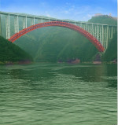
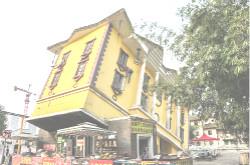
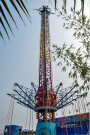
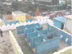
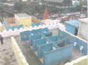
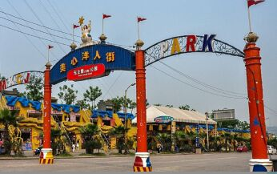
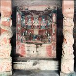
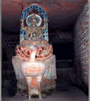
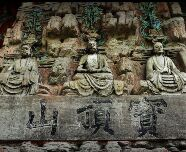

重庆地图
全市地图
交通信息
自驾线路：重庆市区出发经渝宜高速公路至巫山县城，全程约450公里，共4.5小时车程。进入县城后，到巫山旅游码头乘坐小三峡游轮游览。
乘车线路：在重庆市区四公里综合换乘枢纽站、龙头寺汽车站乘前往巫山的县级大巴（179元/人），车程约5小时，至巫山客运车站换乘101、105路公交车（1.5元/人，车程约20分钟）或出租车（5元起步价，车程约10分钟）前往小三峡游客接待中心。
更多介绍请点击
景点简介
龙门巴雾连滴翠，奇山秀水胜三峡。长江小三峡以其美丽的景色吸引着众多游人的目光；其南起巫山县，北至大昌古城。俗称巫山小三峡，也称大宁河小三峡，为大宁河景区的精华部分所在。与长江三峡的宏伟壮观、雄奇险峻相比，小三峡则显得秀丽别致，精巧典雅，故人们赞誉小三峡可谓“不是三峡，胜似三峡”。
组成景点
小三峡由龙门峡、巴雾峡和滴翠峡组成。
龙门峡为小三峡第一峡，长约3公里，峡口两山对峙，峭壁如削，天开一线，状若一门，为三峡旅游者赞为小夔门。
出了龙门峡，就是著名险滩“银窝滩”了。这里山回水转，滩险流急，实为航程上的险途。过了险滩即进入铁棺峡。铁棺峡长约10公里，这里两岸怪石嶙峋，形成一组组天然雕塑，个个妙趣横生。
滴翠峡是小三峡中最长、最幽深、最秀丽的一段峡谷，从双龙至涂家坝长约20公里。
巫山小三峡
小三峡—小小三峡旅游风景区，1991年被评为“中国旅游胜地四十佳”、2004年11月评为“国家AAAA级旅游景区”，2007年5月被评为“国家AAAAA级旅游景区”，同时还被评为“中国国家级重点风景名胜区”，“重庆文明景区”，“重庆安全景区”，被名人誉为“中华奇观”，“天下绝景”。
娱乐设施
洋人街建有一个游乐园、鬼屋、索道等娱乐设施。
特色标语
2009年，在全市“唱传讲读”活动影响下，洋人街标语开始悄悄转变，将红色浪潮以活泼的方式在洋人街展现。几乎所有红色标语都以红色为底色，在右下角有象征着中国力量的拳头与旗帜。
厕所文化
洋人街的厕所很大，可以同时容纳几千人入厕。厕所里面还有一个厕所文化展览。展览内容是一些非常有特色的图片。比如有一张名字叫“强人用美元上厕所”，卷纸的位置是一卷连在一起的美元。这里还有一个出名的全国第一个露天厕所。这是一个用油漆漆成黄色的可同时让四人同时小解的厕所，象征着人们越来越开放的思想观念。
交通路线
重庆市区可乘坐公交315路、318路、338路在“洋人街”站下车。
  

美心洋人街
重庆洋人街是美心集团开发的，位于重庆市南岸区的弹子石附近，濒临长江之滨，全街建筑采用欧美风情。
整个街区有两条并行的观光大道，两边的房子最高三层，每一栋都各不相同，更多的则是小木屋，花一块钱就可以坐西式马车或者花车环游一番。两条观光大道中间是一座人工运河，河水引自长江，名字却叫“圣安东尼奥河”，上面要架32座“世界名桥”。建有一座“金色大厅”可以举行西式婚礼，大厅旁是一座教堂。
出行路线
公交线路：轨道交通1号线在大学城或者尖顶坡下车，到四川美术学院汽车站乘坐565公交车到青木关开发区或者凤凰镇站下车，换乘283公交车到达凤凰花海景区；轨道交通1号线在陈家桥站下车2号出口换乘460公交车至凤凰杨家庙终点站下车，再换乘283公交车到达凤凰花海景区。
自驾交通路线：经内环快速路往渝遂高速方向，至绕城高速渝遂互通走绕城高速(往青木关方向)，在青木关下道，沿碚青路至凤凰镇，沿凤回
路前行4公里右转即到景区；经内环快速路往渝遂高速方向，经大学城至物流园B出口下道，沿垄安大道直行至凤回路，沿凤回路往凤凰镇方向行驶3公里右转即到景区。
开放时间
9:00-18:00
门票
¥30
凤凰花海位于重庆市沙坪坝区凤凰镇，整个景区规划面积1.1万亩，已建成近4000亩。位于核心区的凤凰花海“花漫大地”四季花景观园，占地近500亩，种植各类花卉和景观植物品种达300余种，是一个以观赏草花、木本花卉、景观植物以及科普推广为主的四季主题花卉展示景观园。
详细介绍：
凤凰花海园内主要以时令花卉为要素，如春季：郁金香、冰岛虞美人、兰花、樱花、桃花、海棠花、紫荆花、木棉花；夏季：杜鹃花、鲁冰花、飞燕草、向日葵、紫薇花、石榴花；秋季：格桑花、牵牛花、秋菊；冬季：三色堇、瓜叶菊、香雪兰、蝴蝶兰、红梅花等，形成以花卉为主题的四季鲜花景观。“花漫大地”四季花卉景观园，拥有“迷宫花田”、“七彩花坡”、“凤凰腾飞”、“蓝色恋歌”、“红树林荫”、“乐樱缤纷”、“镜中花月”、“奇异花卉展示园”等近20处重点赏花景点，以及花艺雕塑、大风车和主城区域内最大的凤凰花鸟图，让你享受一场视觉盛宴。花卉景观生态休闲展示厅、生态酒店、花卉超市、林中休闲步道、生态休闲广场、棋牌娱乐室、生态鱼池等设施一应俱全，是现代都市人远离尘嚣、怡情悦性、度假休闲的好去处。
◎费用仅提供参考，请以现场公告为准，不另行通知！
费用简介：
- 1、宝顶山石刻RMB$80元。
- 2、北山石刻RMB$60元。
- 3、北山和宝顶山联票RMB$120元。
- 4、玉龙山RMB$15元。
重庆凤凰花海
♣ 石篆山石刻
特点：石篆山石刻是中国最早的儒、释、道三教合一造像区，特别是6号龛儒家石窟造像“孔子十哲龛”世界少有。
位置: 石篆山石刻位于距重庆大足区约20公里的三驱镇佛会村，海拔444.6米。
♣ 南山石刻
特点：大足南山石刻在洞窟形制上体现出道教仪式中旋绕一法的运用。在中国宋代道教石窟中，此窟雕刻最为精美，有着极高的宗教、历史、艺术价值。
位置: 南山古名广华山，地处大足龙岗镇南2公里，海拔514米，素有“南山翠屏”之誉
♣ 北山石刻
特点：北山石刻是大足佛教石窟艺术鉴赏旅游圣地，人物造像个性鲜明，体态优美，比例匀称，穿戴华丽，璎珞蔽体，花簇珠串，玲珑剔透，装饰味浓。有“中国观音造像的陈列馆”之美誉，被公认为是“中国石窟艺术皇冠上的一颗明珠”。
位置: 大足北山古名龙岗山，距大足龙岗镇以北1.5公里，海拔545.5米。
♣ 石门山石刻
特点：它大足石刻中规模最大的一处佛、道教合一造像区，以道教题材诸窟造像最具艺术特色。
位置: 重庆大足城东石马镇新胜村石门山山巅。
详细介绍：
♣ 宝顶山石刻
特点：大足宝顶山石刻包括以圣寿寺为中心的大佛湾、小佛湾近万尊大型佛教密宗道场，凡佛典所载，无不备列，几乎将一代大教搜罗毕尽，且以“神的人化，人的神化”创新形式和精湛技艺，将佛教典故民族化、生活化、世俗化，为各类文化层次旅游者所能欣赏和感悟，是大足石刻精华之所在。
位置：宝顶山位于大足龙岗镇东北15公里处的宝顶镇，海拔527.83米。
旅游地点介绍
大足石刻
大足石刻，是唐末、宋初时期的宗教摩崖石刻，以佛教题材为主，以北山摩崖造像和宝顶山摩崖造像最为著名，是中国著名的古代石刻艺术。北山摩崖造像长约三百多米，是全国重点文物保护单位、世界文化遗产。造像最初开凿于晚唐景福元年，历经后梁、后唐、后晋、后汉、后周五代至南宋1162年完成，历时250多年。现存雕刻造像四千六百多尊，是中国晚期石窟艺术中的优秀代表。
目录
简介
重庆（Chóngqìng）是中国四大中央直辖市之一，中国重要的中心城市之一，中国国家历史文化名城，中国长江上游地区的经济中心，中国国家重要的现代制造业基地，中国西南地区城乡统筹的特大型城市。地处中国内陆之西南，位于长江上游，是一个多中心组团式的城市。
重庆景点速览
重庆，号称“火炉”、“山城”、“雾都”，曾经的陪都，现在的直辖市，媲美夜香港的无敌夜景，还有那乱人眼球的美女……，重庆市区的景点主要分布在渝中区和沙坪坝区，周边也有不少特色景点，值得深入发掘。
重庆下辖区县的旅游资源也很丰富，主要景点有：大足石刻、钓鱼城、缙云山等，顺长江东去，分布着丰都鬼城、石宝寨、白帝城等景点，随着长江即将进入湖北段，也就到了著名的三峡景区。

重庆旅游
小指南
------重庆，你非去不可------